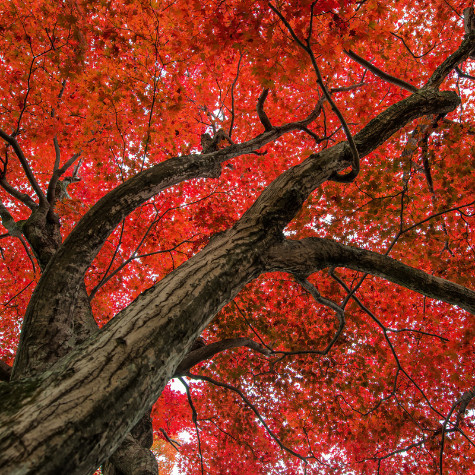
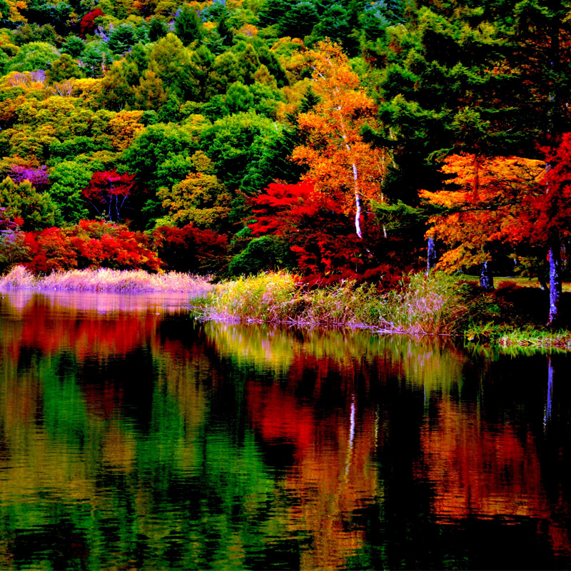
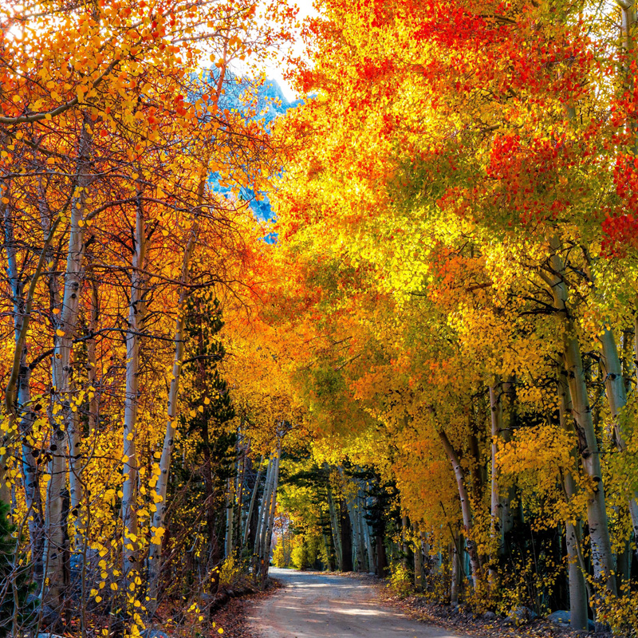
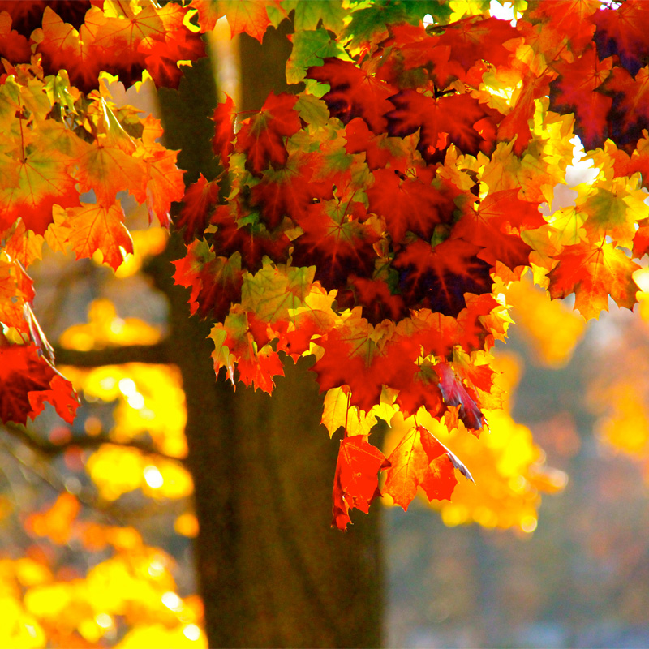
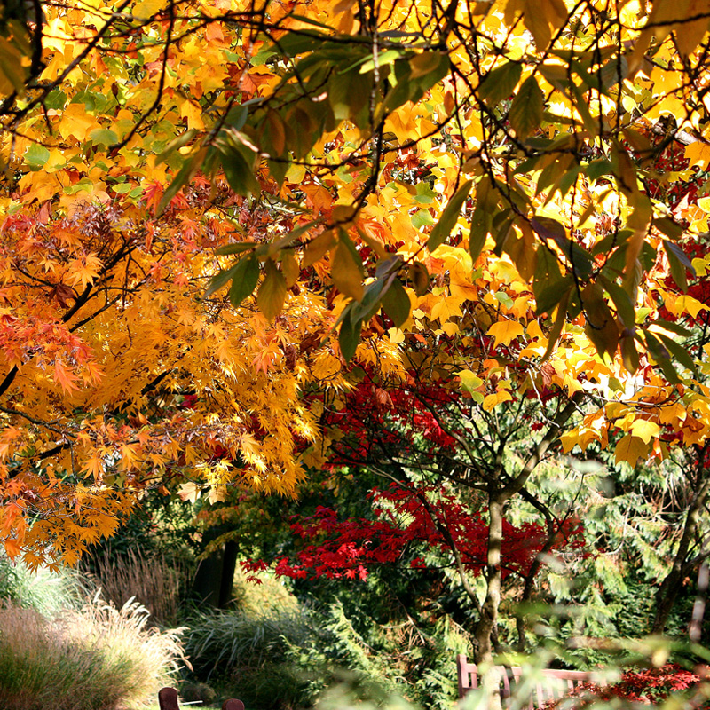

北京的喇叭沟门
北方最绚烂的红叶童话最佳赏红叶时间：10月中下旬坐标：北京怀柔县喇叭沟门满族乡孙栅子村。喇叭沟门的秋，在北京绝对是算得上数一数二的，北方的原始森林、员是次生林被深红、浅黄点染，身处其中，那份饱满的诗意，总让人浮想联翩……

江西婺源石城村
水墨丹青的朱红调最佳赏红叶时间：11月中旬到12月上旬坐标：层林尽染之时，依山傍水的徽派古村落形成了一幅幅天人合一的水墨山水画，显得静谧悠远。这个村周围有百来棵枫树，每棵树高都在35米以上，清晨雾气或炊烟中的火红枫树美不胜收……

浙江文成红枫古道
霜叶与秋絮翻飞最佳赏红叶时间：11月下旬到12月底坐标：浙江省温州市文成县。文成红枫古道，被誉为“浙江最美秋景”，现在保存完好的红枫岭全县还有60余条，枫树3000多棵。每到深秋，文成的山岭上便被红枫点缀得生机勃勃。 ……

湖北神农架
彩色调子的神奇之旅最佳赏红叶时间：10月下旬至11月中旬坐标：神农架是华中地区赏红叶的绝佳去处，每当深秋，这里便被红叶蒙上了一层纱，而神秘的传说，也让红叶着上了神秘的调调。神农架的红叶多为丹枫，每到秋季，山峦之间便由绿变黄、由黄变红，热闹起来！……

吉林红叶谷
深秋方醒，层林尽染最佳赏红叶时间：10月坐标：吉林省吉林市蛟河。红叶谷从庆岭镇的解放村一直延伸到松江镇的沿江村，全长50多公里。10月林子中的红叶都褪去了绿衣，换上了新颜。红叶林、白桦林，红白相映，远观飞霞漫天！……
江苏苏州天平山
五色并存的秋天最佳赏红叶时间：10月至11月坐标：乾隆下江南四游天平山而演化成深秋赏枫的人文习俗，古枫吐艳与江南园林融合在一起，别致迥然。这里的枫叶入秋经低温双打后，叶子逐渐由青变黄、转橙、呈红、泛紫，是名副其实的“五彩枫”。……

广东从化石门山
广州的“香山”最佳赏红叶时间：11月底至次年的1月坐标：广州市从化区桃园镇大岭山林场。广东的秋天总是来得晚并持久一些，于是石门山要到11月才能渐渐发现红叶的影子。也正是因为这样，直到次年1月，依然可以欣赏到不错的红叶景致。……
安徽黟县塔川
红叶与古村的诗意画卷最佳赏红叶时间：11月坐标：安徽黟县际联镇塔川村。经过霜降，由绿变黄、由黄变红。深秋时节，火红的树叶和清澈的泉水、粉黛的民居相互辉映，宛如一幅江南水墨画，是摄影发烧友的绝佳素材。……

辽宁本溪
通往中国枫叶之路最佳赏红叶时间：9月下旬至10月坐标：在本溪，老边沟、观山门、五女山、大水沟的红叶都很知名，但最值得推荐的还是“中华枫叶之路”。走进这条县域公路，如入画。和煦的秋光下，多多片片的艳红点缀着重峦叠嶂。……